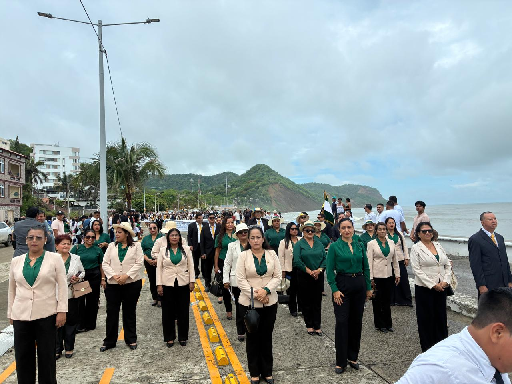
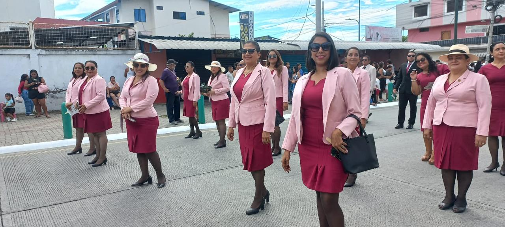

Eloy Alfaro presente en el homenaje a Sucre
Una jornada para celebrar juntos 151 años de cantonización.
Bahía de Caráquez · Cantón SucreUna comunidad que camina con su cantón.
El 3 de noviembre, la Unidad Educativa Fiscal Eloy Alfaro se hizo presente en el desfile cívico con una delegación de su cuerpo docente, para rendir homenaje a la historia, la identidad y el espíritu de servicio del cantón Sucre.
La participación estuvo liderada por la rectora, Ing. María Soledad Rivadeneira Bravo, MSC., junto al personal de la institución. Con respeto y orgullo, la comunidad educativa acompañó esta fecha especial para Bahía de Caráquez y todo el cantón.
Un homenaje para recordar.

Celebramos nuestra historia y renovamos el compromiso de educar con identidad, respeto y esperanza. ¡Viva Sucre!
Dato histórico: reseña de la Municipalidad de Sucre · conmemoración de los 151 años en 2026.